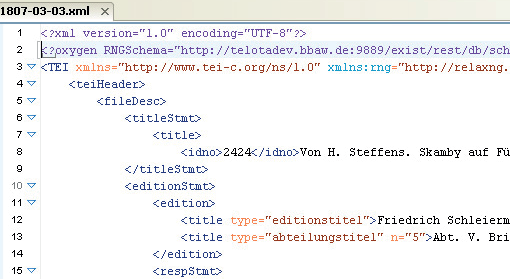

Oxygen XML Author verfügt über drei verschiedene Ansichtsmodi, um ein XML-Dokument zu betrachten. Die Ansicht kann über die Leiste am unteren Rand des Hauptfensters gewechselt werden. Die Ansicht „Raster“ wird allerdings für für das Vorhaben CAGB nicht verwendet.

Ansichtsmodus "Autor"
Standardmäßig öffnet sich ein Dokment im Ansichtsmodus „Autor“. Das ist eine Ansicht ähnlich einem Schreibprogramm wie Microsoft Word. Im Dokument sind die verschiedenen Elemente entsprechend formatiert. Es gibt auch einige Elemente, die der Übersichtlickeit halber ausgeblendet wurden (insbesondere im sog. teiHeader). Die Werkzeugleisten mit den Bearbeitungsfunktionen für die Handschriftenbeschreibung und Transkription werden auch nur in diesem Modus eingeblendet.
Die Ansicht des Dokuments im Autorenmodus kann über die Schaltfläche „Stile “ in der oberen Werkzeugleiste angepasst werden.
Ansichtsmodus "Text"
Eine XML-Datei kann auch in der „Text“-Ansicht geöffnet werden. Hier wird der gesamte Code des XML-Dokuments angezeigt. Elemente und ihre Attribute sind farblich hervorgehoben. Diese Ansicht eignet sich daher vor allem zur Kontrolle der TEI-Auszeichnungen. Mit dem Tastenkürzel [Strg] + [E] kann man in dieser Ansicht markierte Wörter mit einem Tag umgeben. Attribute können direkt im öffnenden Element ergänzt werden, dafür bietet das Programm Vorschläge an, sobald ein Leerzeichen hinter dem Elementnamen eingegeben wird. Die Einrückungen und Zeilenumbrüche in der Codeansicht haben keine Auswirkungen auf die Darstellung in der Autoransicht sowie die Webausgabe.
Schriftarten
Möglicherweise ist notwendig sein, die Schriftart umzustellen – z.B. wenn die Standardschrift seltene altgriechische Schriftzeichen nicht darstellen kann (was aber nicht passieren sollte). Über den Punkt „Einstellungen“ im Menü „Optionen“ und im dann erscheinenden Dialogfenster den Punkt „Schriftarten“ können die Schriftarten für den Editor (Textmodus) sowie den Autor (Autormodus) geändert werden. Voraussetzung ist, dass die Schrift im System bereits vor Programmstart installiert worden ist. Bitte beachten Sie, dass u.U. die Schriftgrößen unterschiedlich ausfallen und ebenfalls nach oben oder unten korrigiert werden müssen.
Die Änderung der Schriftart hat lediglich Auswirkung auf die Darstellung der Datei. Der Text wird weiterhin in Unicodekodierung (UTF 8) gespeichert und ist daher von der zur Darstellung verwendeten Schriftart unabhängig – das gilt auch wenn Zeichen zu fehlen scheinen (d.h. leere Blöcke angezeigt werden).
Bei Fragen und Problemen mit Schriften und der Darstellung von (insbesondere altgriechischen) Zeichen wenden Sie sich bitte an TELOTA .